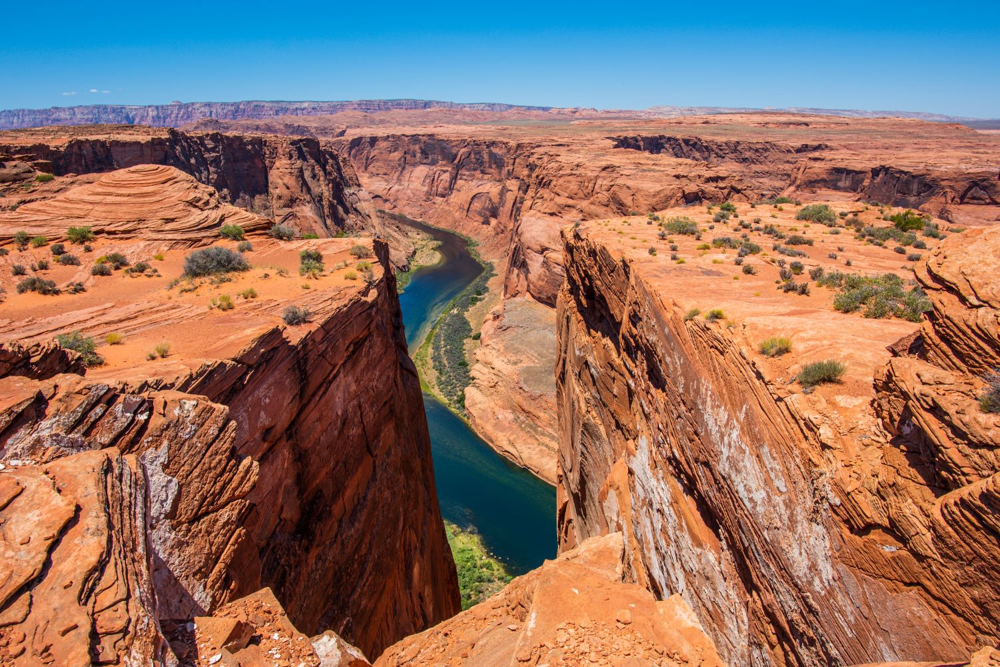

1. Таинственный каньон
Место проведения: Мраморный каньон и экотропа «Горная сказка»
Продолжительность: 10 часов
Уровень сложности: Легкий
Ближайший выезд: 26.09.2026
Стоимость: 2 500 руб.
Описание: Прогулка по оборудованным деревянным настилам вдоль величественных мраморных скал и посещение заброшенных штолен. Подходит для всей семьи, в том числе с детьми.
Забронировать этот тур ← Назад в каталог